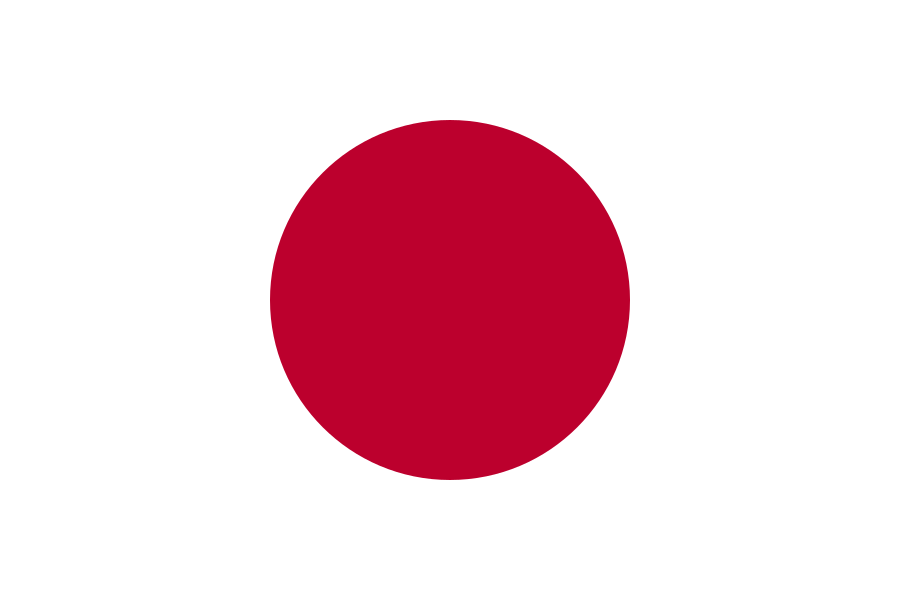
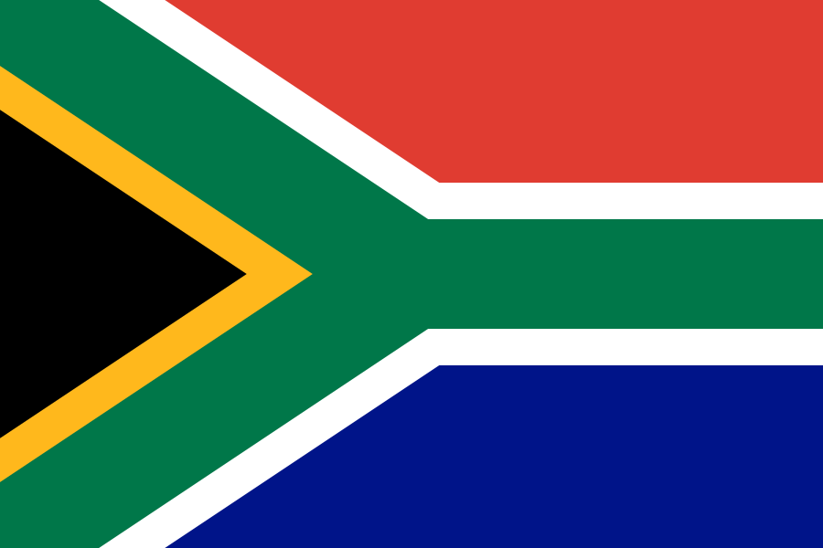
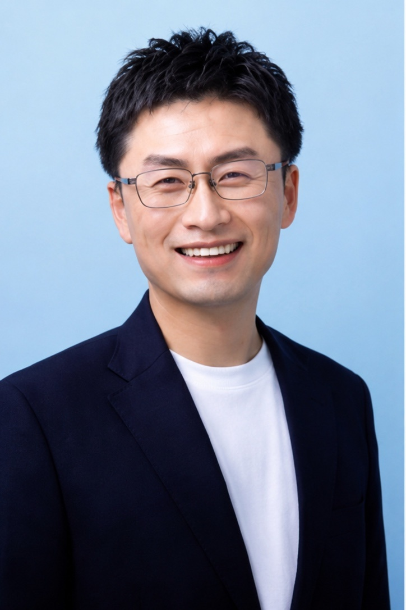

共同代表・代表取締役
松原 弘治
モバイルサービス企画・法人ソリューションに従事し、大手自動車メーカーのグローバルコネクテッドプロジェクト立ち上げを経験。企業向けサービスとプラットフォーム事業の知見を活かし、2022年に現組織を創業しました。
BUSINESS × TECHNOLOGY × REAL WORK
Japan / South Africa
二つの視点。ひとつのチーム。


私たちは、事業、技術、現場をひとつにつなぎ、複雑な課題を、明快で長く使える仕組みに変えます。

01 — Leadership
事業の意味と技術の現実を切り離さず、最初の対話から実行まで一緒に考えます。
共同代表・代表取締役
モバイルサービス企画・法人ソリューションに従事し、大手自動車メーカーのグローバルコネクテッドプロジェクト立ち上げを経験。企業向けサービスとプラットフォーム事業の知見を活かし、2022年に現組織を創業しました。
共同代表・最高技術責任者（CTO）
九州大学大学院にてAI分野を学び、修士課程を修了。AI・自然言語処理・LLMを活用したプロダクト開発に強みを持ち、AI技術を事業価値へつなぐ製品・技術戦略の策定から開発までをリードします。
02 — One Team
役割は違っても、判断の基準は同じです。事業、技術、製品、運用を分断せず、ひとつのチームとして課題に向き合います。
Business Systems & Operations
複雑な情報と業務要件を、責任の所在が明確で長く使える仕組みに整える。
Architecture, Security & Data
堅牢なアーキテクチャ、データフロー、外部連携、セキュリティ境界を設計する。
Product & Experience
構想を製品の方向性、使う人の体験、実際に動く解決策へ落とし込む。
03 — Experience
サービス構想、法人向け提案、モビリティ、国境を越えるパートナーシップ。
AI・自然言語処理、文書と業務データ、検索、判断支援、運用設計。
製品戦略、技術検証、アーキテクチャ、セキュリティ、現場への定着。
04 — Principles
流行や肩書きではなく、目的、事実、そして使う人に向き合うことから始めます。
表面の要件だけでなく、なぜその仕組みが必要か、どこで壊れるかまで掘り下げます。
流行や慣習より、目的と事実を優先します。必要なものを、必要なだけつくります。
速さ、明快さ、信頼性、長く使えることを品質と考えます。
05 — Start a Conversation
まだ整理されていない構想でも構いません。何が本当に必要か、一緒に考えるところから始めます。